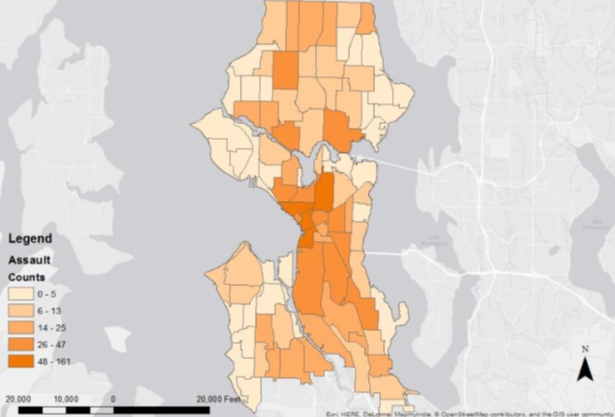

Hi,I'm Frank
programmer and analyst passionate about data and visualization
I write code and tools to process data and help those who make decisions based on it
...and I make some neat interactive projects on the side!
- Java
- Javascript (vanilla, D3, jQuery)
- Python
- C#
- PHP
- SQL/MySQL/SQLite
- HTML
- CSS
Languages
- ArcGIS Desktop / Online
- OpenStreetMap
- Tableau
- Fulcrum
- SPSS Statistics
- Azure
- Mircrosoft Office (Access, Excel, Word, Powerpoint)
- Visual Studio 2015
- Unity3D
- Photoshop / Illustrator CS6
Software
NBR Maritime Awareness Project

An interactive map for the Maritime Awareness Project (MAP) at NBR.
The visualization shows various martime activities in regards to US-Asia relations. I did mostly backend - database management as well as cartography work and contextual research. Specifically, I worked on the following layers:
-Air Defense System
-9-Dash Line
-Submarine Cables
-Tropical Storms
Link: NBR MAP
Python Script Tool for CSV and Feature Classes

ArcPy tool to help import CSV files
ArcMap has no native support for CSV files, which is problematic when mass CSV files need to be converted to geographic layers.
I wrote this ArcPy script tool that merges a folder of CSV files and converts it into a single dbf table. The tool has parameters to create point layers or line layers, streamlining the process.
The code is available here.
UW Game Dev Club Site
A website, made with no libraries, for the Game Development Club at the University of Washington.
The site is a hub for announcements, club related information, resources, and student made games.
I also implemented a PHP based Content Management System (CMS) to help future officers and admins to easily update site content.
Link: uwgamedev.com
The code is available here.
Int'l District Art (Seattle)
An interactive map for public art in the international district.
Clicking on each point reveals details for each art piece.
Geocode was performed using Field Papers and Github (gist). Data collection using Fulcrum. Visual Display using Carto.
Tennis Court Spatial Pattern

Can tennis courts be an indicator of median income?
Created thessien/voronoi polygons surronding tennis courts in Seattle and performed statistical practices. Results showed a correlation! Residents in areas of higher average median income (darker shades) do not have to travel as far to access a tennis court compared to residents of lower average median income.
Unnamed Prototype
A multiplayer, space-themed dogfighter.
This project was my very first attempt at trying to 'make it big' in game developement. Of course, it was never finalized but I learned a lot about game design, networking, and most importantly, scope. In short, two novice game devs should not be aiming for a triple-A level, space-shooter MMO. This important lesson has helped finish more projects and games since!
Water Quality in WRIA 8, King County (WA)
Using data from the EPA to show water quality in King County.
Darker shades show higher "restoration potential," areas that are more effective for investment. These areas also happen to be the less populated and less developed areas.
Comparing US poverty levels in 2003 and in 2013 (Tableau)

An interactive map for poverty levels in 2003 and 2013.
These snapshots in time allow us to compare the change in poverty levels and spatial spread over the decade.
Data collected from US Census.
Map created in Tableau.
Assault Occurrences in Seattle (2010)
 A statistical investigation on the spatial distribution of assault in Seattle.
Calculated Moran's I for the following categories:
-Contiguity edges only
-Contiguity edges and corners
-Inverse Distance
-Inverse Distance Squarted
And found clustered patterns of assault occurrences.
Furthermore, the General G for the same categories, showed high intensity of clustering.
NOAA Tropical Storm Web Scrape Tool
A web scrape tool that converts NOAA archives into .csv.
National Oceanic and Atmospheric Administration holds archival data about tropical storms. Because the data is presented in unfriendly, unreadable format, this tool scapes and parses text off their site into easily downloadable csv files. This internal tool was used to streamline the rebuilding of a tropical storm database.